Префектура Ямагути · Нагато и Ямагути · фрукты и овощи
Фрукты и овощи Ямагути: сад семьи Цуда, ферма в горах и первое дерево нацумикана
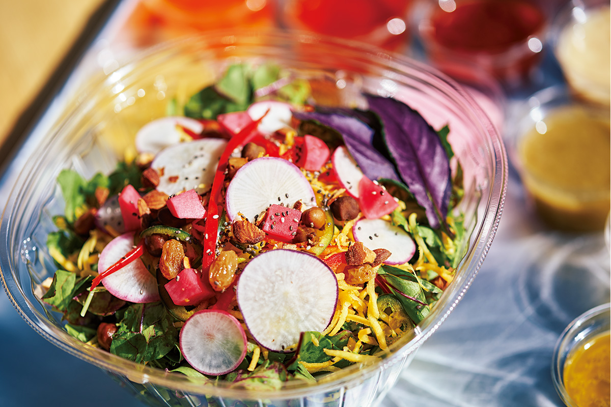
Префектура Ямагути выходит сразу к двум морям, и в каждом её углу растёт что-то своё: груши в горах, мандарины на тёплом побережье, редкие цитрусы у Японского моря. Мы побывали у тех, кто выращивает фрукты и овощи без компромиссов.
Фрукты
Три климата одной префектуры
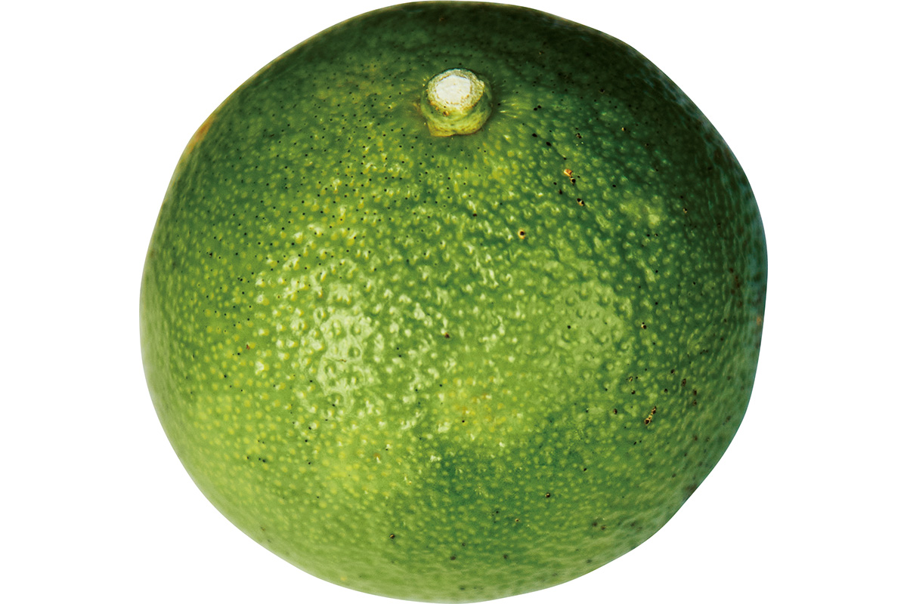
Префектура Ямагути омывается Японским морем на севере и Внутренним Японским морем на юге, а посередине тянутся горы Тюгоку. Поэтому погода здесь сильно разная даже в пределах одной префектуры. Обычно выделяют три зоны: побережье Японского моря, горные районы внутри префектуры и побережье Внутреннего моря. От Японского моря и до гор зимой много пасмурных дней, бывает и снег. На стороне Внутреннего моря дождей мало круглый год, и климат сравнительно мягкий.
От климата зависит и то, что растёт в садах. На побережье Японского моря, в том числе в Нагато, выращивают нацумикан, летний мандарин. В горах растят груши и яблоки, а у Внутреннего моря мандарины уншиу и клубнику. Каждой культуры понемногу, зато их много: этим Ямагути и отличается.
Стоит присмотреться и к фирменным цитрусам префектуры, которые ценят по всей Японии. «Юмэ-хоппэ» (сорт сэтоми) получили, скрестив цитрусы киёми и ёсиура-понкан. Мякоть у него упругая, а по сладости он среди лучших цитрусовых. С Нагато прочнее всего связан нагато юдзукити, родственник кабосу и судати. Кислота у него сравнительно мягкая, поэтому его добавляют во множество блюд и заготовок, а многие местные выжимают его в сладковатый соевый соус для сашими.
Многие фермеры Ямагути относятся к своему делу очень серьёзно, и у фруктов каждого хозяйства свой вкус. Его и стоит искать.
Овощи
Белая бамия и баклажан Тая
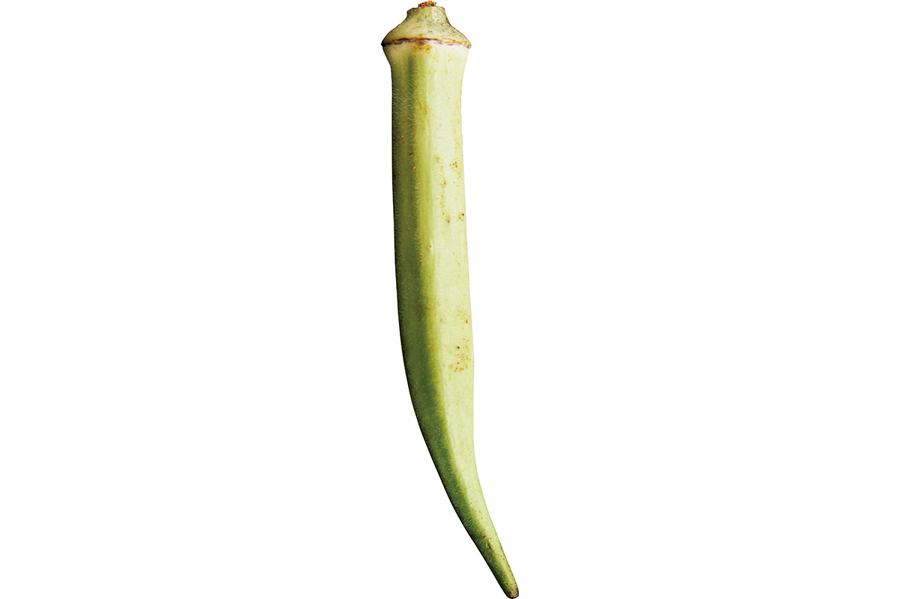
Род Мори, правивший княжеством Тёсю в эпоху Эдо (1603–1868), осваивал пустоши и низины у моря, строил каналы и всячески поддерживал земледелие. Поэтому в Нагато много овощей и фруктов с особенностями, которых больше нигде нет. Самые известные из старинных местных овощей это баклажан Тая, который в 1920–1930-х годах выращивали прежде всего в районе Тая, и белая бамия: её начали сажать после войны в округе Мисуми.
Сад
«Цуда Ноэн»: не продавать того, что невкусно
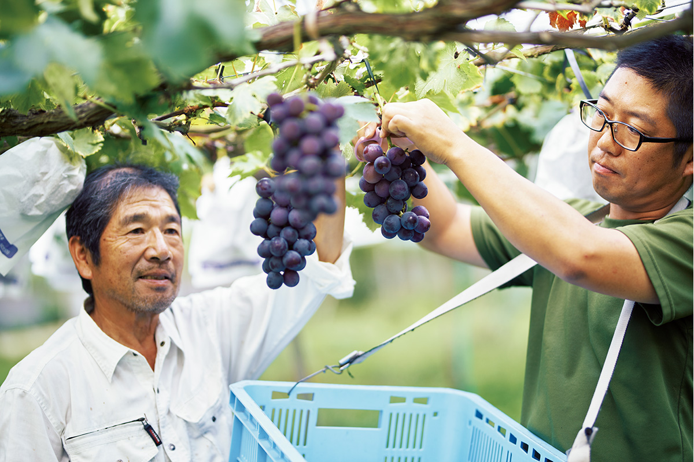
«Сад открыл мой отец в 1920-х или 1930-х годах. Он вручную расчистил лесной склон в Тавараяме и посадил груши на участке примерно в 3 000 квадратных метров. С этого всё началось»
хозяин сада, второе поколение
Тавараяма это район в глубине города Нагато, среди лесистых холмов. Сегодня сад «Цуда Ноэн» занимает около 25 000 квадратных метров. Работают в нём вчетвером: хозяин с женой и их сын с женой. Здесь растят груши, виноград, каштаны, голубику и делают из урожая разное, от обедов с рисом и каштанами до игристого вина.
Принцип, доставшийся от основателя, звучит просто: «Не продавать того, что невкусно». Чтобы фрукты были безопасными, здесь не используют гербициды и не выращивают сорта вроде винограда без косточек, у которых растение лишено своих семян. Хозяин признаётся, что всё время спрашивает себя: «Действительно ли мы выращиваем то, что годится в пищу человеку?»
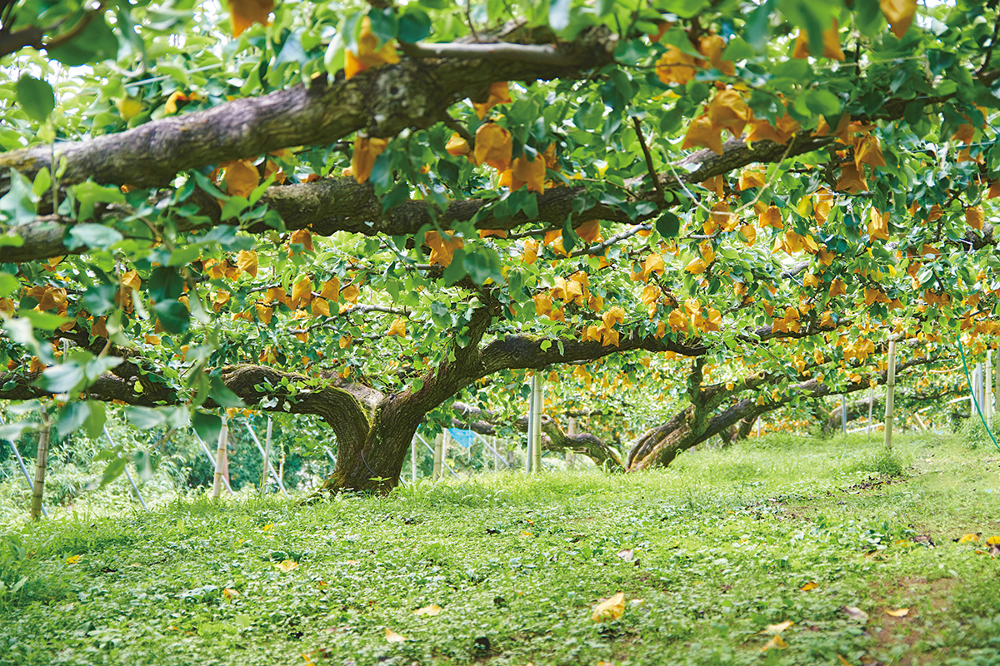
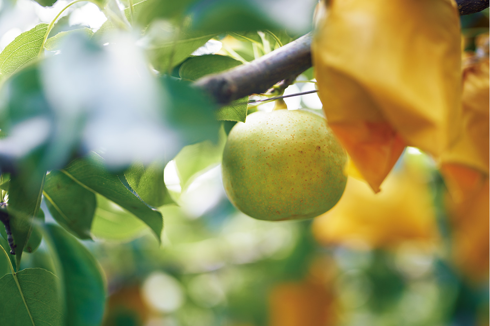
Сад принимает местные условия как есть, ищет слабые места и раз за разом их исправляет, а фрукты растут в согласии с природой. И вкус у них богатый. Виноград оставляет на языке мягкое и глубокое послевкусие, груша мелкозернистая и сочная, сладость и кислинка в ней уравновешены идеально.
«Мы будто шли все эти годы вместе с покупателями, которые приезжают к нам каждый год. А ещё очень много дали друзья по Высшей школе для фермеров при министерстве сельского хозяйства, куда я поступил в 1968 году. Все они смотрят вперёд и охотно пробуют новое, у них я многому научился. Фрукты должны становиться лучше, и сам я тоже должен расти»
хозяин сада
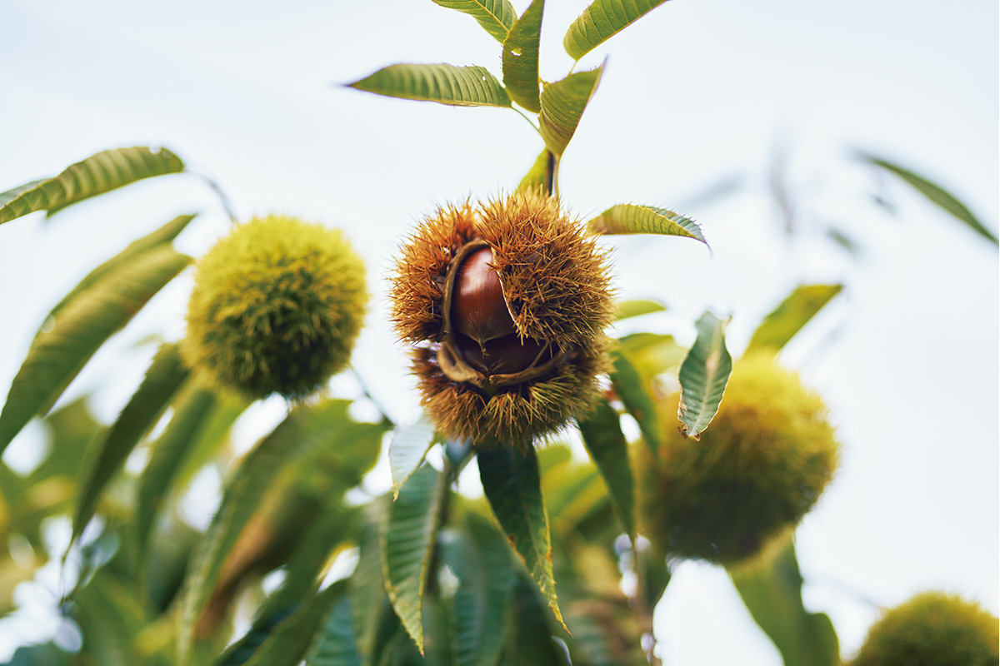
Его слова продолжает сын, который принял сад как третье поколение.
«Совершенствовать технику, конечно, важно. Но прежде всего я хочу сохранить то, чем всегда дорожил отец: связь с людьми. А ещё мне хочется браться за новое, и я хочу, чтобы от моей работы была польза и сельскому хозяйству Японии, и обществу»
У сына докторская степень по сельскому хозяйству, и он ведёт исследования, в основном по размножению и выращиванию ягод. К 2020 году он начал выращивать на продажу саженцы цитруса фингер-лайма.
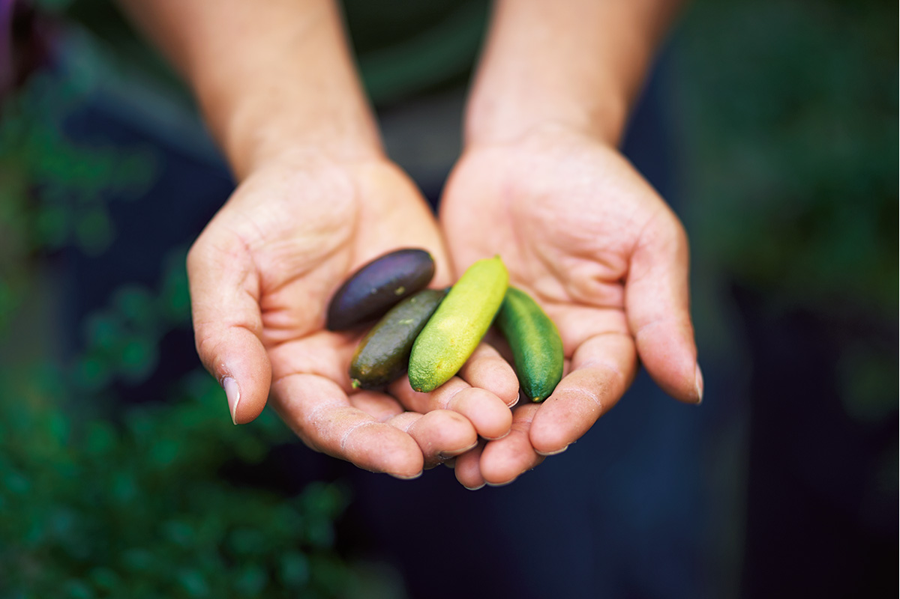
Передавая дело следующему поколению, семья Цуда продолжает искать в каждом фрукте лучший вкус.
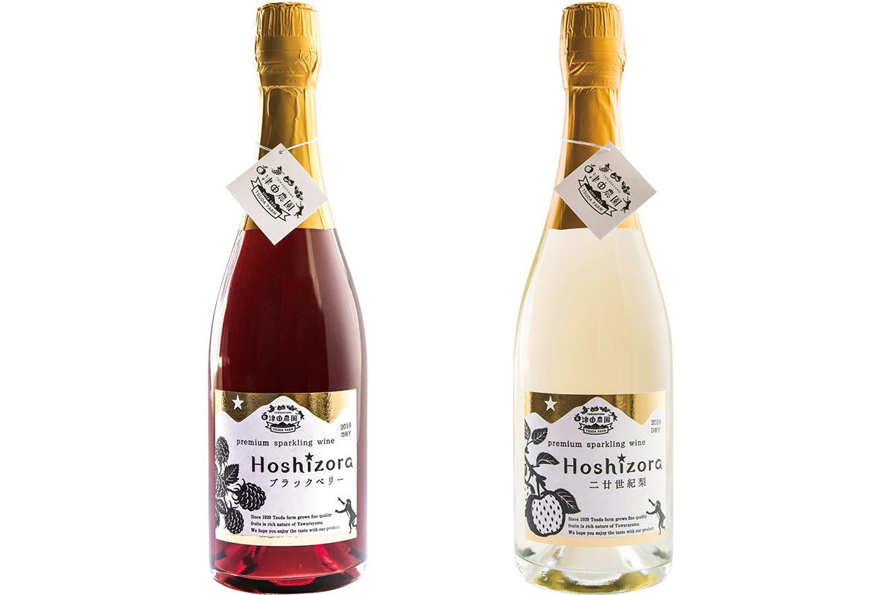
Сбор винограда и груш, сбор каштанов, голубики и ежевики возможны по договорённости: о них нужно спрашивать в саду заранее.
«Цуда Ноэн»
- Адрес
- префектура Ямагути, Нагато, Тавараяма, 1569 (лавка при саде: Тавараяма, 1581-5)
- Телефон
- +81 90-7126-4477
- Часы работы
- 9:00–17:00 (лавка)
- Выходные
- с середины августа до конца сентября без выходных, в остальное время нерегулярно
- Сайт
- tsudafarm.com
Ферма
«Ёродзу фарм»: овощи, которые придают сил
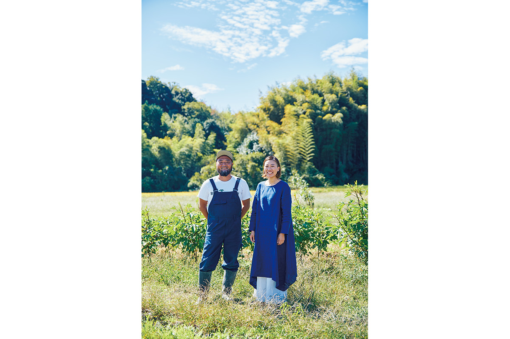
«Люблю работать в поле на тракторе и смотреть на горную деревню вокруг. Еда это основа жизни. Я счастлив, что моя работа связана с ней»
Так говорит, щурясь на сияющее небо, хозяин фермы «Ёродзу» в городе Ямагути. Загорелое лицо, лохматая борода, белая футболка, джинсовый комбинезон и резиновые сапоги: вид у него очень колоритный.
Он и его жена родом из Иокогамы. В 2006 году они переехали в город Ямагути, где был дом его бабушки и дедушки. Поработав в деревообрабатывающей компании и в сельскохозяйственной фирме, в 2016 году он стал самостоятельным фермером. А на следующий год прямо на участке, где стоят ферма и дом, супруги открыли лавку: по выходным здесь можно было поесть салат из утренних овощей и домашнее веганское карри.
«Когда мне было двадцать с небольшим, я несколько месяцев жил в Бразилии, учился капоэйре, это бразильское искусство на стыке борьбы и танца. Я видел людей в трущобах, которые изо всех сил боролись за жизнь, и задумался: а что такое жизнь, достойная человека? Этот опыт и привёл меня к земле»
хозяин фермы
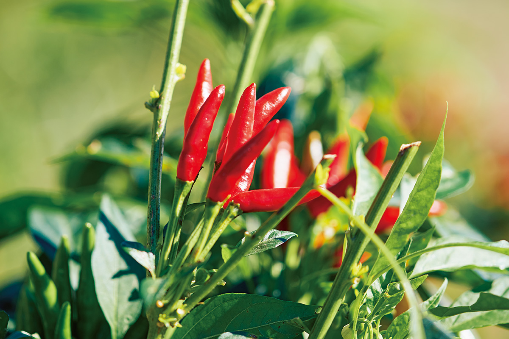
Из земли, которую поколениями держала семья мужа, они обрабатывают около гектара: выращивают овощи и рис и держат шелковых кур уккокэй. Чтобы как можно меньше нагружать природу и людей, обходятся без пестицидов и химических удобрений.
«Поле каждый день выглядит по-новому. Неудач много: бывает, за один день насекомые изъедают мидзуну в клочья. Но защищать жену и двух дочек-школьниц, беречь гостей, которые к нам приезжают… Мы сами выбрали такую жизнь, и каждый день она меня радует»
хозяин фермы
За красочным салатом, где только овощи с фермы, гости возвращаются снова и снова, а ряд домашних заправок к нему радует глаз. Жена готовит карри из листьев редиса, подолгу обжаривая черри и лук. Сначала чувствуется лёгкая острота, потом её мягко догоняет сложная сладость овощей, и всё это легко ложится в желудок. После такого обеда кажется, что хозяева поделились с тобой своей добротой и бодростью.
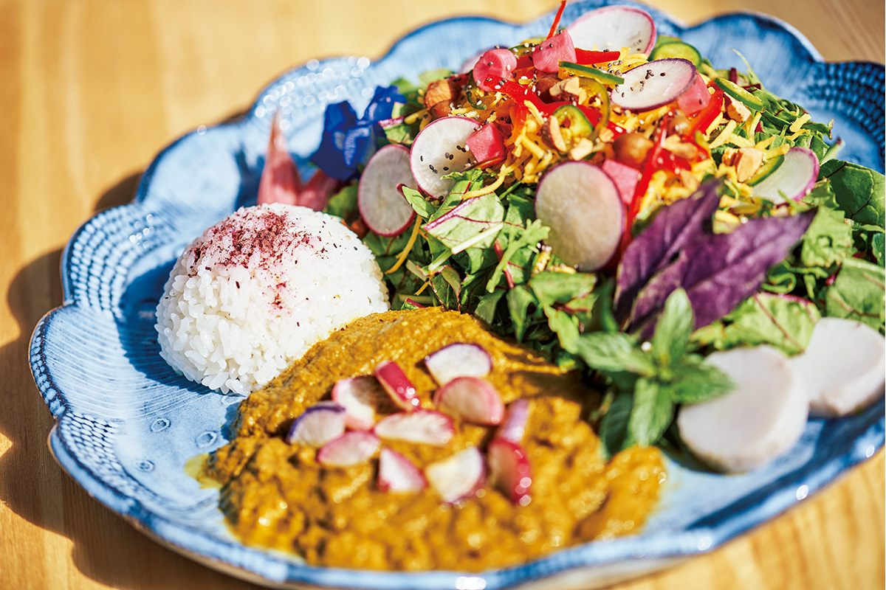
«Ёродзу фарм»
- Адрес
- префектура Ямагути, город Ямагути, Мияно-Ками, 486-1
- Телефон
- +81 839-81-5149
- Часы работы
- лавка в пятницу и субботу 11:00–15:00 (в субботу до 14:00), бар безалкогольных коктейлей в субботу 16:00–19:00 и в воскресенье 13:00–17:00
- Сайт
- yorozufarm.com
История
Ямагути, родина нацумикана
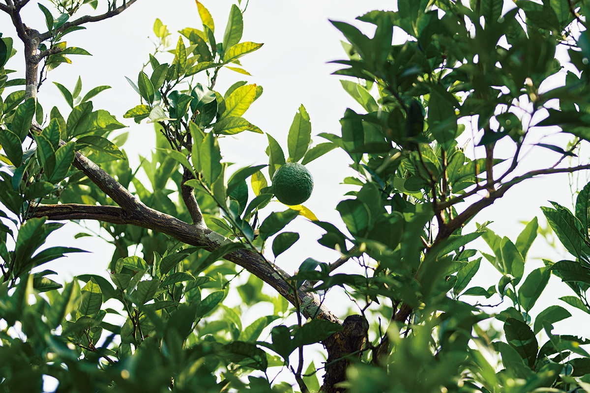
Впервые нацумикан вырастили в Японии около трёхсот лет назад. Считается, что Тё Нисимото посеяла семена, которые море вынесло на берег острова Омидзима у Нагато, и вырастила из них дерево. В 1927 году это первое дерево под названием «Исходное дерево нацумикана в Охиби» признали историческим местом и природным памятником Японии. Его по-прежнему берегут потомки Тё Нисимото в десятом поколении: они вовремя прореживают завязи, чтобы старое дерево не истощалось.
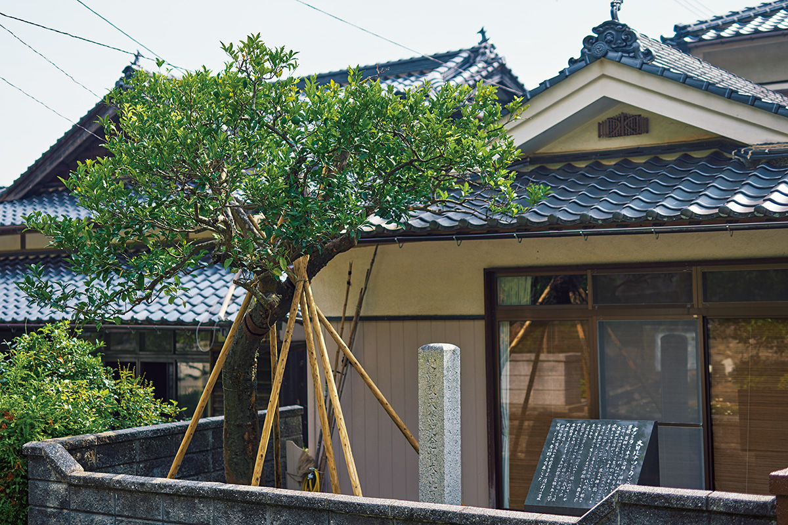
Исходное дерево нацумикана
- Адрес
- префектура Ямагути, Нагато, Сэнсаки, Охиби
- Телефон
- +81 837-26-0708 (туристический центр Нагато «Юкутэ»)
- Цены / Вход
- дерево растёт у частного дома, поэтому при посещении соблюдайте часы осмотра
Фото: Рюсукэ Хонда.